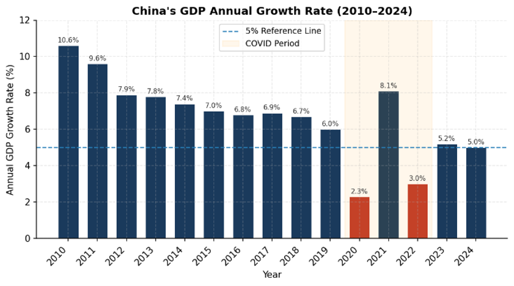
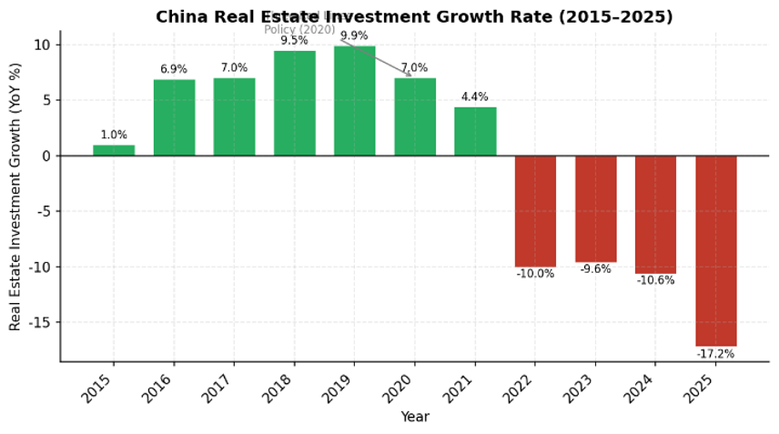
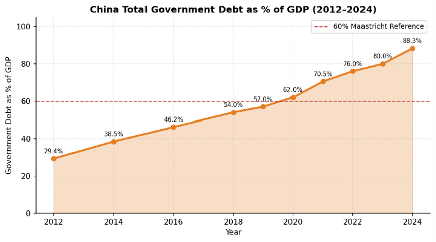
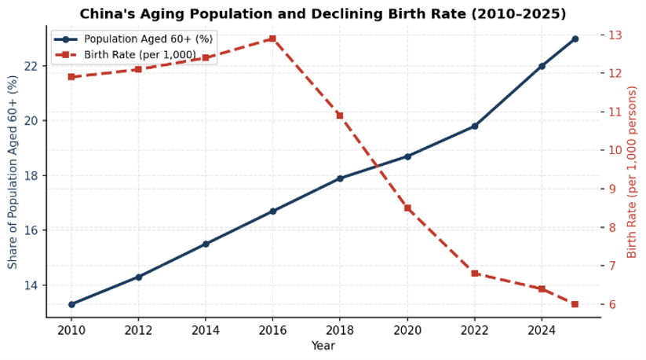
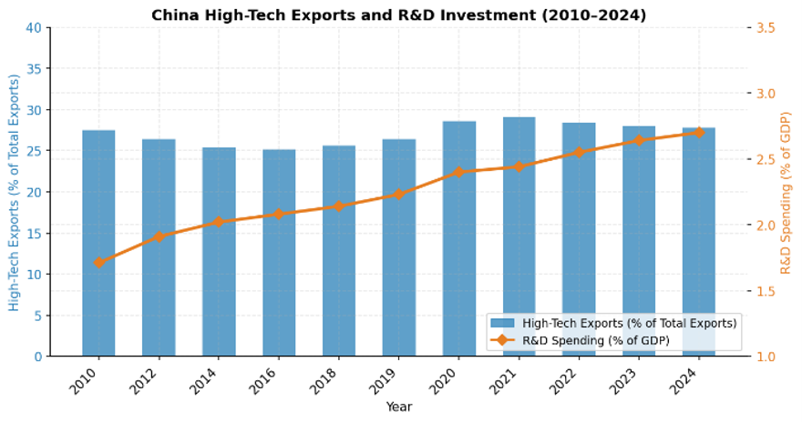
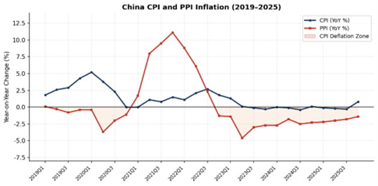
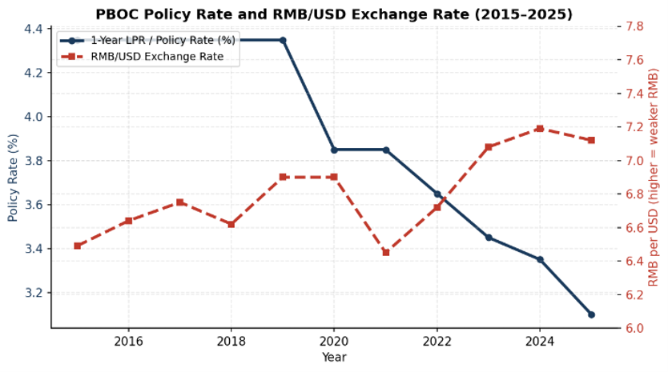
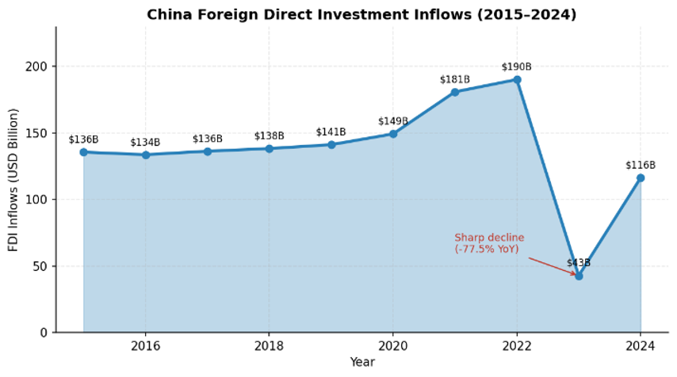

Background
For decades, China’s economic miracle was propelled by a combination of export-led manufacturing, massive infrastructure investment, and a booming real estate sector. The property market, along with related industries, historically accounted for approximately 25% to 30% of China’s Gross Domestic Product (GDP) [1]. Crucially, this growth model was underpinned by a “land fiscal policy” system, where local governments relied heavily on the sale of land use rights to property developers to finance infrastructure projects and public services. This system created a feedback loop of rising property prices, increasing local government revenues, and expanding debt through Local Government Financing Vehicles (LGFVs).
However, recognizing the systemic risks posed by excessive leverage in the property sector, the Chinese government introduced the “Three Red Lines” policy in August 2020 [2]. This regulatory framework strictly limited the debt-to-cash, debt-to-equity, and debt-to-assets ratios of property developers. The policy effectively choked off credit to highly leveraged firms, precipitating a severe liquidity crisis that culminated in the default of Evergrande Group in 2021, which held over $300 billion in liabilities [3].
Simultaneously, China’s demographic dividend, which had provided a vast supply of cheap labor, began to reverse. The population is aging rapidly, and the birth rate has plummeted to historic lows, leading to a shrinking workforce and increased social welfare burdens [4]. In response to these domestic challenges and rising geopolitical tensions, the government accelerated its industrial policy, shifting focus from basic, labor-intensive manufacturing to high-technology sectors, as outlined in the “Made in China 2025” initiative [5].
Currently, the PBOC operates a managed floating exchange rate regime, intervening to maintain the RMB’s stability against a basket of currencies, primarily the US Dollar [6]. Monetary policy relies on a complex mix of quantitative tools (such as the Required Reserve Ratio) and interest rates (such as the Loan Prime Rate), but lacks a formal, independent inflation targeting framework. Instead, inflation expectations are often implicitly set by municipal governments or broad national targets, which dilutes the central bank’s ability to manage market confidence effectively.
Analysis
China’s GDP growth rate has declined steadily from over 10% in the early 2010s to approximately 5% in recent years, with the COVID-19 shock in 2020 and the real estate contraction in 2022 representing the most acute disruptions. The current recession is structural, instead of simply the aftermath of COVID, leading by the collapse of land fiscal policy system, demographic headwinds, and industrial structure transition. All these factors diminish domestic demand and create overcapacity in certain industries.

The Collapse of Land Fiscal Policy and Local Government Debt
The implementation of the “Three Red Lines” policy successfully deflated the property bubble, but the collateral damage has been immense. Real estate investment has contracted sharply, plunging by 10.6% in 2024 and a record 17.2% in 2025 [7].

This collapse has devastated local government finances. Revenue from land sales plummeted, exposing the fragility of the land fiscal policy model. Consequently, local governments have struggled to service their massive LGFV debts, which reached an estimated 60 trillion RMB (approximately 48% of GDP) by 2023 [8]. Total government debt surged to over 88% of GDP in 2024 [9]. The heavy debt burden severely constrains the fiscal space available for local governments to stimulate the economy, shifting the burden of macroeconomic stabilization onto monetary policy.

Demographic Headwinds and Weak Domestic Demand
China’s demographic trajectory is exacerbating the demand shortfall. The population declined for the fourth consecutive year in 2025, with the cohort aged 60 and above reaching 323 million, or 23% of the total population [10]. The birth rate has fallen to approximately 6.0 per 1,000 persons [11].

An aging population inherently consumes less and saves more for retirement and healthcare, structurally depressing domestic demand. Household consumption in China remains exceptionally low by global standards, hovering around 38% of GDP, compared to over 68% in the United States [12]. This structural lack of consumption is a primary driver of the current deflationary environment.
Industrial Transformation and Deflationary Pressures
To offset the decline in real estate, China has doubled down on industrial policy, heavily subsidizing high-technology manufacturing, green energy, and electric vehicles. R&D spending reached 2.7% of GDP in 2025 [13]. While this has successfully increased the share of high-tech exports, it has also led to significant overcapacity in certain sectors.

With domestic demand too weak to absorb this increased production, Chinese firms have engaged in fierce price competition, driving down profit margins and exporting deflation globally. The Producer Price Index (PPI) has been in negative territory for over two years, and the Consumer Price Index (CPI) slipped into deflation in late 2023 and 2024, only marginally recovering to 0.8% in December 2025 [14].

Deflation creates a vicious cycle: consumers delay purchases anticipating lower prices, corporate profits shrink, wages stagnate, and the real burden of debt increases. The current managed float exchange rate, which has kept the RMB relatively weak to support exports, exacerbates this issue by failing to boost domestic purchasing power. Furthermore, the lack of a clear inflation target from the PBOC leaves the market without a credible anchor for future price expectations.
Policy Options
To combat structural deflation and transition to a consumption-driven growth model, the PBOC and the central government must consider alternative macroeconomic frameworks.
Aggressive Quantitative Easing and Fiscal Stimulus
This approach involves massive PBOC asset purchases and central government borrowing to bail out local governments and stimulate infrastructure spending.
Implications: While this could provide a short-term boost to GDP, it risks reigniting the debt bubble, exacerbating overcapacity, and delaying necessary structural reforms. It does not address the fundamental issue of weak household consumption.
Free Floating Exchange Rate and Full Capital Account Liberalization
This option would allow the market to entirely determine the RMB's value and permit unrestricted capital flows.
Implications: A free float could lead to severe trade turbulence and extreme currency volatility. Given the current low-interest rate environment in China relative to the US, full capital liberalization would likely trigger massive capital flight, destabilizing the domestic financial system and depleting foreign exchange reserves.
Crawling Peg Exchange Rate, Inflation Targeting, and Calibrated Capital Controls
This approach involves shifting to a crawling peg exchange rate regime targeting gradual appreciation, formally adopting an inflation target, lowering domestic interest rates, and maintaining capital controls while liberalizing FDI.
Implications: Gradual appreciation boosts domestic purchasing power, while inflation targeting anchors expectations. Capital controls prevent destabilizing outflows, allowing the PBOC to lower rates independently.
Recommendations
Based on the analysis of China’s structural challenges, Option 3 is the most viable and comprehensive strategy. The PBOC should implement a coordinated package of monetary and exchange rate reforms designed to boost domestic demand, combat deflation, and manage the industrial transition.
Transition to a Crawling Peg Exchange Rate Regime
The PBOC should transition from its current managed float against the USD to a crawling peg system based on a Nominal Effective Exchange Rate (NEER) basket, explicitly modeled after the framework used by the Monetary Authority of Singapore (MAS) [15].
Implementation: The PBOC would establish an undisclosed policy band for the RMB NEER. Crucially, the central bank should set the slope of the band to allow for gradual, controlled appreciation of the RMB.
Rationale: A gradually appreciating currency increases the purchasing power of Chinese households, making imported goods and commodities cheaper, thereby stimulating domestic consumption. It forces domestic firms to upgrade their productivity rather than relying on cheap currency for export competitiveness. By controlling the pace of appreciation, the PBOC can ensure it aligns with the development of high-tech exporting industries, avoiding the trade turbulence associated with a free float.
Adopt a Formal Inflation Targeting Framework
The PBOC must be granted the authority to set and communicate a formal, explicit inflation target (e.g., 2.0% to 3.0% CPI growth).
Implementation: The PBOC should shift away from relying on municipal governments to set inflation expectations. The central bank must enhance its macro-communication strategy, using forward guidance to signal its commitment to achieving the target.
Rationale: In a deflationary environment, anchoring inflation expectations is critical. A credible inflation target gives the PBOC a powerful tool to influence market confidence. When consumers and businesses believe the central bank will successfully engineer moderate inflation, they are incentivized to spend and invest today rather than delay purchases.
Implement Calibrated Interest Rate Reductions
To combat the immediate recessionary conditions, the PBOC should continue to lower benchmark interest rates.
Implementation: Gradual reductions in the Loan Prime Rate (LPR) and reserve requirement ratios (RRR).
Rationale: Lower interest rates directly reduce the debt servicing burden on local governments and LGFVs, providing them with desperately needed fiscal breathing room. At the micro level, Chinese corporations operating on marginal profits due to fierce competition are highly sensitive to interest rates; lower borrowing costs will prevent widespread bankruptcies during the industrial transition.

Maintain Capital Controls but Liberalize FDI
Capital controls remain a necessary tool for macroeconomic stability, but they must be refined.
Implementation: Maintain strict limits on speculative portfolio outflows by domestic residents and corporations. However, reduce restrictions and ownership limits for Foreign Direct Investment (FDI) to near zero in non-strategic sectors.
Rationale: Capital controls provide the PBOC with autonomy to lower domestic interest rates without triggering massive capital flight and currency collapse. However, with inward FDI falling by 77.5% in 2023 to historic lows [16], China needs foreign capital and expertise. Because domestic industries have matured significantly, the need to protect them from foreign competition has diminished. Liberalizing FDI will help offset domestic investment declines.

Conclusion
China’s current economic malaise is not merely a cyclical downturn exacerbated by the COVID-19 shock; it is a profound structural recession. The collapse of the land fiscal policy model, combined with severe demographic headwinds, has created a persistent demand deficit and entrenched deflation. While the transition toward high-technology manufacturing is necessary, it cannot single-handedly replace the growth previously generated by the real estate sector without a corresponding increase in domestic consumption.
To navigate this transition, the PBOC must modernize its policy framework. By adopting a Singapore-style crawling peg to facilitate gradual RMB appreciation, formally targeting inflation, lowering interest rates, and refining capital controls, China can boost domestic purchasing power, alleviate local government debt burdens, and anchor market expectations. These reforms are essential to successfully rebalance the Chinese economy away from debt-fueled investment and toward sustainable, consumption-driven growth.